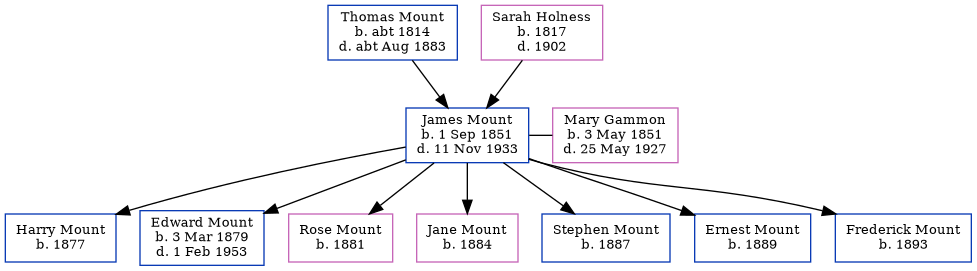

James Mount 1851 - 1933
[ Home ] | [ Calendar ] | [ Surnames Index ] | [ Errors ] | [ Family History ]A stoker at gasworks and the child of Thomas Mount (a labourer) and Sarah Holness (a charwoman), James Mount, the first cousin four-times-removed on the mother's side of Nigel Horne, was born in Herne Bay, Kent, England on 1 Sept 18511,2, was baptised there at St Martin's Church, 24 Herne St on 28 Sept 1851 and also married Mary Gammon (a laundress with whom he had 7 children: Harry, Edward Thomas, Rose E, Jane, Stephen, Ernest and Frederick) there at Christ Church on 30 Apr 18762.
During his life, he was living at King Street in Herne Bay on 7 Apr 18614 and on 2 Apr 18715, at 7 Salts Lane in Herne Bay on 3 Apr 18818 - less than a mile from his cousin on his father's side James Stupple who was living at 10 Victoria Terrace in Herne Bay and his first cousin once-removed on his father's side Frederick Stupple and first cousin once-removed on his father's side James Stuppell who were living at 10 Victoria Terrace in Herne Bay -, at 24 King Street in Herne Bay on 5 Apr 18917 - less than a mile from his cousin on his father's side Abraham Mount who was living at 2 Salts Lane in Herne Bay, and at 49 King Street in Herne Bay on 31 Mar 19016 and on 2 Apr 19119.
He died on 11 Nov 1933 in Herne Bay3.
Parents
- Thomas was born c. 1814
- Sarah Harvey was born in 1817
Children
- Harry was born in 1877
- Edward Thomas was born on 3 Mar 1879
- Rose E was born in 1881
- Jane was born in 1884
- Stephen was born in 1887
- Ernest was born in 1889
- Frederick was born in 1893
Citations
- England & Wales births 1837-2006 - Findmypast
- Kent, Canterbury Archdeaconry Marriages - Findmypast
- England & Wales deaths 1837-2007 - Findmypast
- 1861 England, Wales & Scotland Census - Findmypast (was age 9 and the son of the head of the household)
- 1871 England, Wales & Scotland Census - Findmypast (was age 19 and the son of the head of the household)
- 1901 England, Wales & Scotland Census - Findmypast (was age 49 and the head of the household)
- 1891 England, Wales & Scotland Census - Findmypast (was age 40 and the head of the household)
- 1881 England, Wales & Scotland Census - Findmypast (was age 29 and the head of the household)
- 1911 Census for England & Wales - Findmypast (was age 57 and the head of the household)
Media
England & Wales births 1837-2006 - BMD/B/1851/3/IR/000651/033
England & Wales marriages 1837-2005 - BMD/M/1876/2/AZ/000201/145
1861 England, Wales - GBC-1861-0523-00296A
1891 England, Wales & Scotland Census - GBC/1891/0005766697
1881 England, Wales & Scotland Census - GBC/1881/0004747360
1871 England, Wales & Scotland Census - GBC/1871/0014201275
1911 Census for England & Wales - GBC/1911/RG14/04354/0131/1
England Births & Baptisms 1538-1975 - R_884305197
England & Wales deaths 1837-2007 - BMD/D/1933/4/AZ/000661/095
Kent Baptisms - GBPRS/CANT/B/96127477
1901 England, Wales & Scotland Census - GBC/1901/0006244914
Family Tree
Map
Generated by ged2site. Last updated on Jul 3, 2024